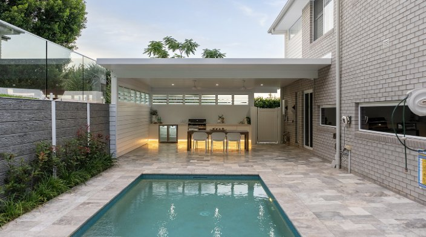
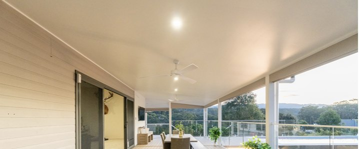
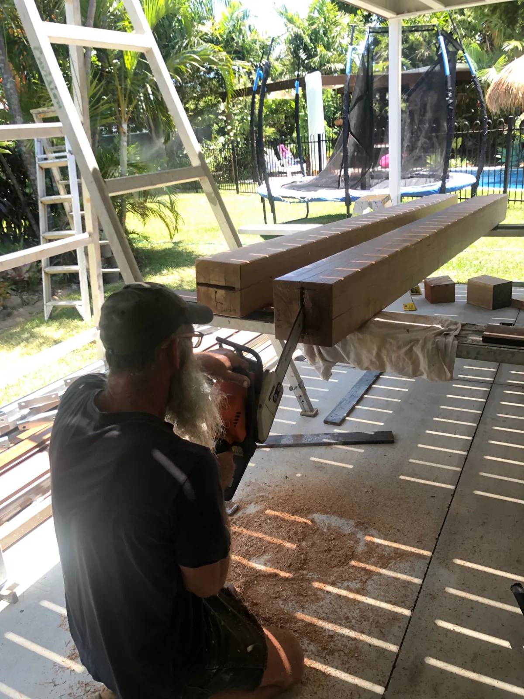
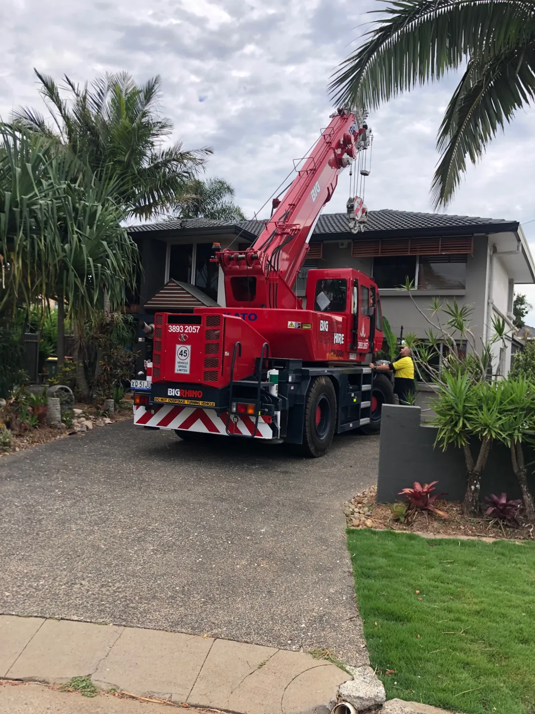
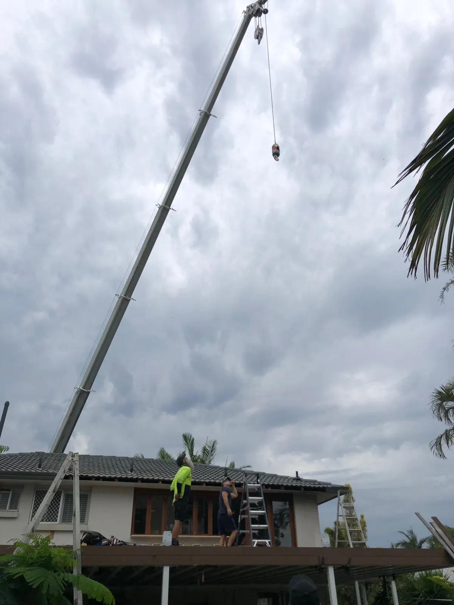
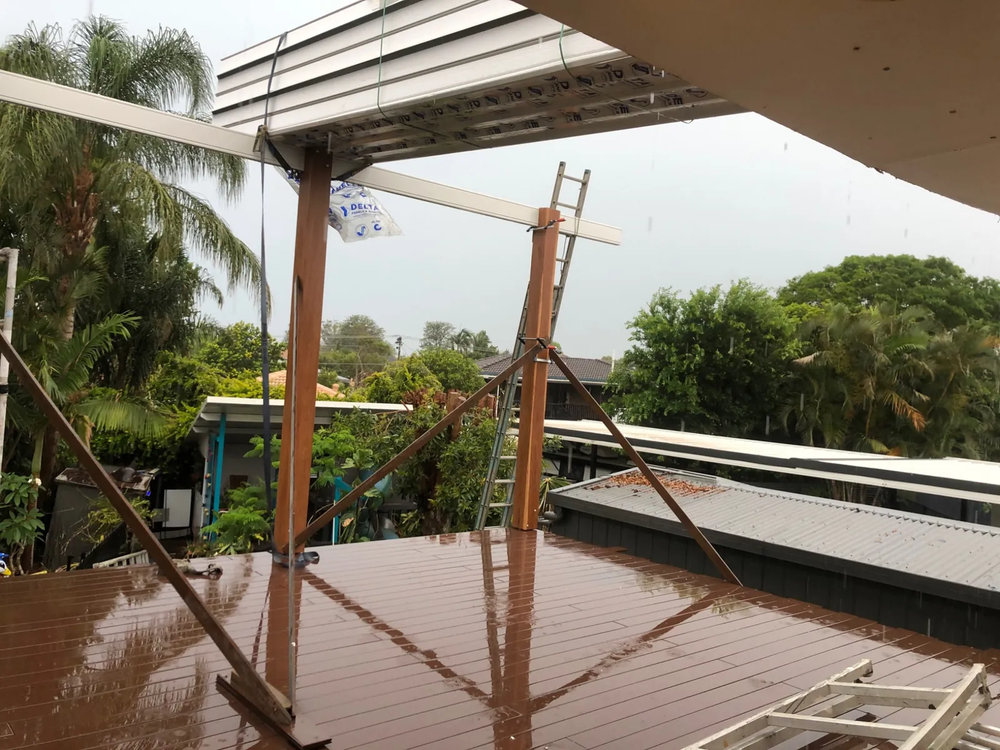
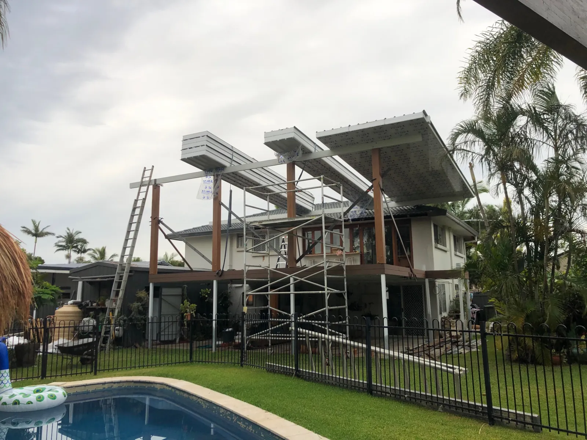
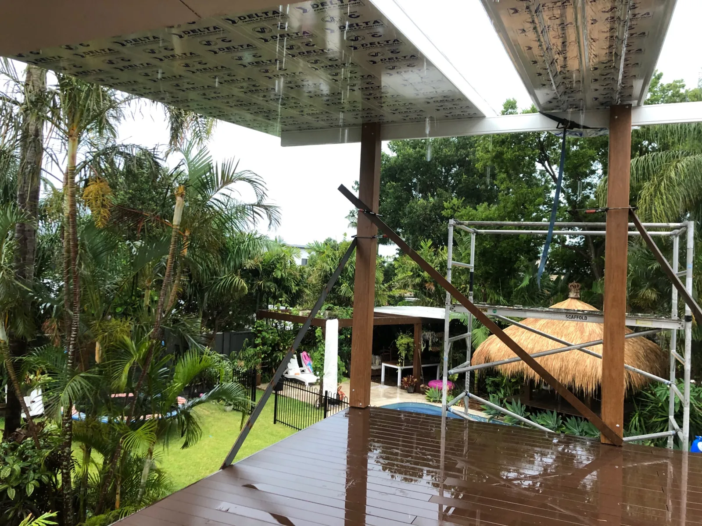
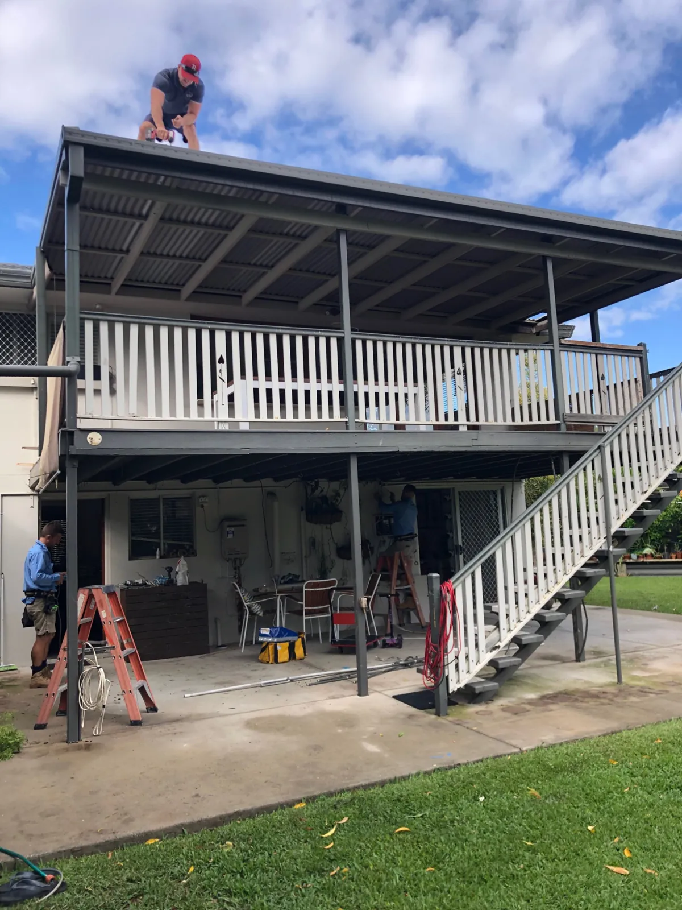
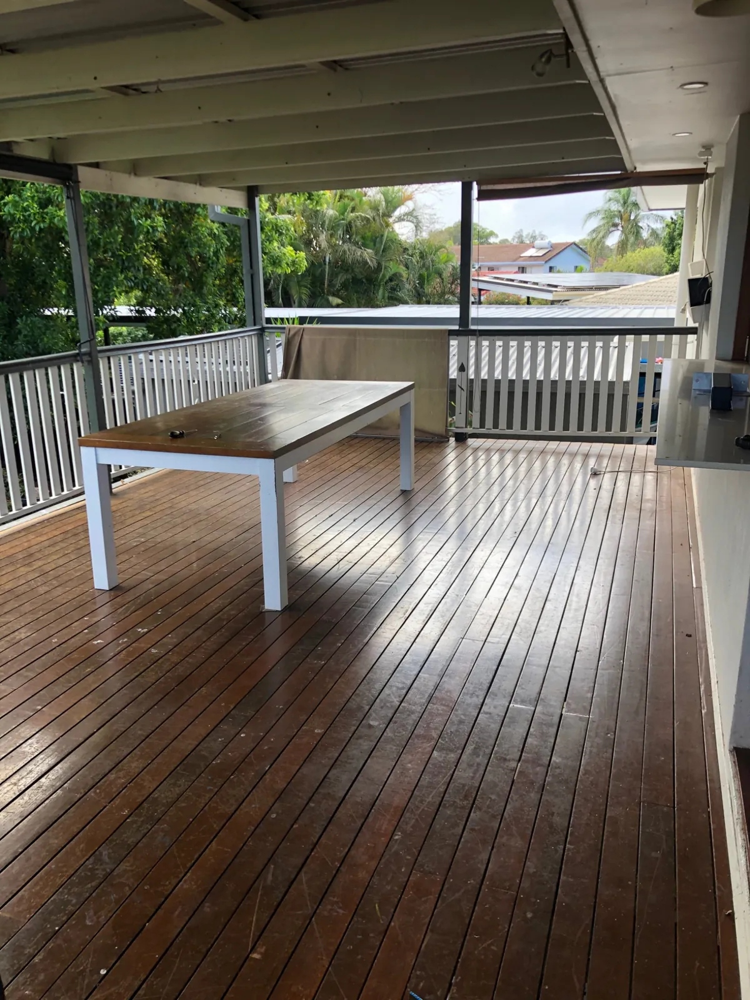

Insulated roofing panels
Panel systems for patios, pergolas and carports.
Learn more →Quality roofing materials for patios, pergolas, carports and outdoor living areas. Supply across Northern NSW and Queensland to the Cairns region.
Request a quoteExplore insulated roofing panels, specifications and compatible components for your project. Easy Panel supplies products and can discuss installer referrals where available.
Explore roofing panels
Panel systems for patios, pergolas and carports.
Learn more →Span tables, flashings and roofing technical resources.
Learn more →Explore our secondary outdoor product range.
Learn more →Tell us your project location, approximate dimensions and preferred products.
Request a quoteExplore completed insulated-roof patio spaces and the clean white ceiling finish.


Easy Panel supplied the insulated roofing panels for this project. These photos show stages of the residential work, from preparation and crane access through to the covered outdoor area.







